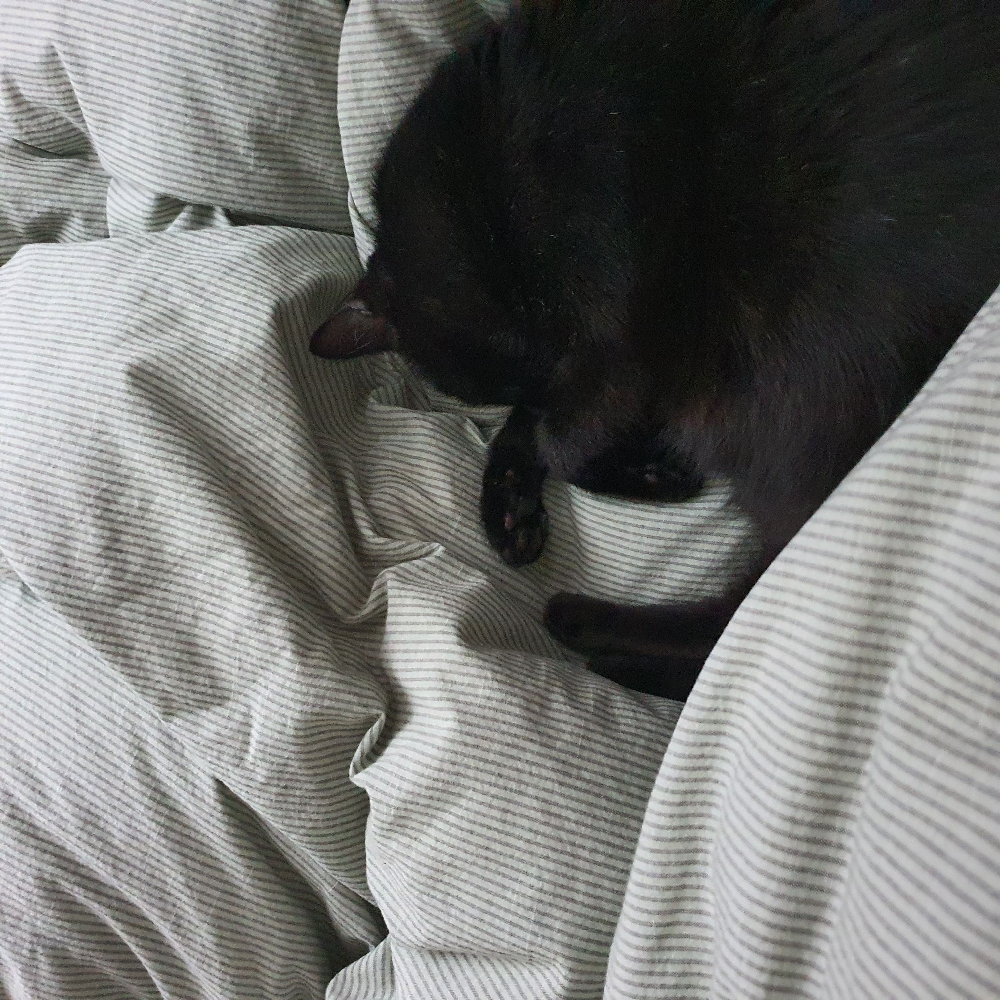

집고양이와 겨울나기
- 고양이 특징
- 고양이 추위 증상
- 겨울철 적정 온도 및 습도
- 고양이와 겨울나기 방법
▷ 고양이 겨울나기 방법 ◁

- 1. 이불, 담요, 겨울 숨숨집
- 고양이들은 포근한 공간, 온몸을 부드럽게 감쌀 수 있는 곳에서 자는 것을 좋아합니다. 그러므로 몸을 뉘고 체온을 회복할 수 있는 이불이나 담요, 숨숨집 등을 준비해 주면 겨울을 건강히 나는 데에 큰 도움을 받을 수 있습니다.
- 2.겨울 난방
- 바닥에 보일러를 적정 온도 및 시간을 설정하여 예약하여 트는 것이 가장 좋은 난방 방법입니다.
히터나 난로는 직접적으로 뜨거운 열을 내는 기구들이기 때문에 화상의 위험에 노출될 수 있고 전기장판은 털이 짧은 아이들이 장시간 사용하게 되면 저온 화상을 입을 수 있으므로 보일러를 통해 실내 온도를 조절하는 것이 가장 좋은 방법입니다.
- 3. 빗질 자주하기
- 빗질로 털 사이에 공기가 들어가게 되어 공기가 자연 단열재 역할을 하기 때문에 체온 유지에 도움을 주므로 빗질을 자주해주는 것이 좋습니다.
- 4.음수량 신경쓰기
- 추위가 심해지면 음수량이 줄어들면서 비뇨기계 질환 감염의 위험성도 늘어나므로 음수량이 떨어지지 않도록 보호자가 더 신경 써주어야 합니다.
▶ 처음으로